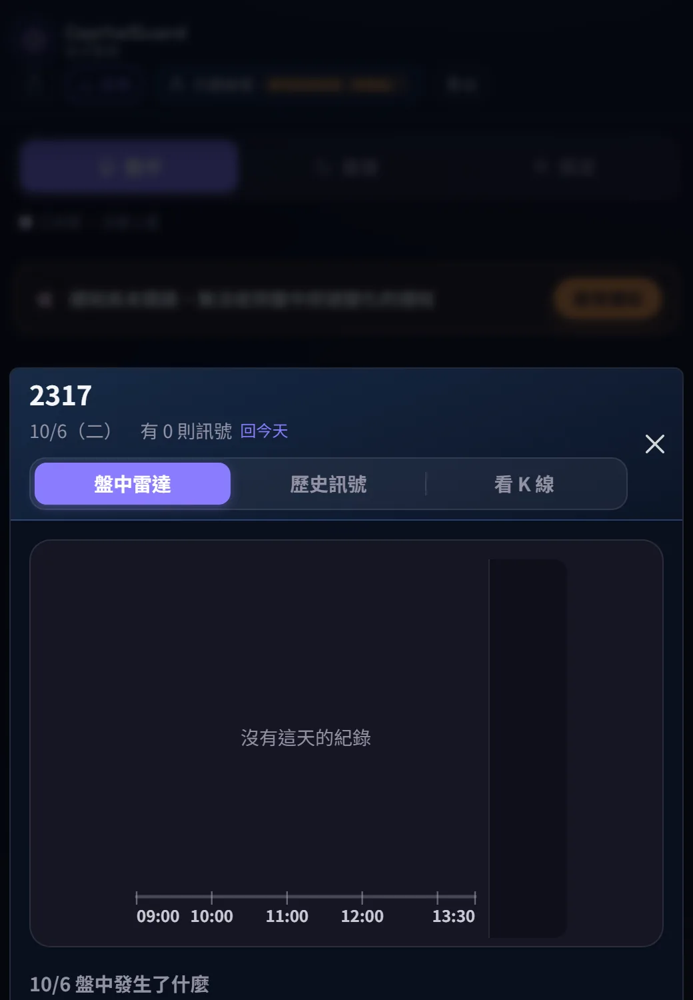
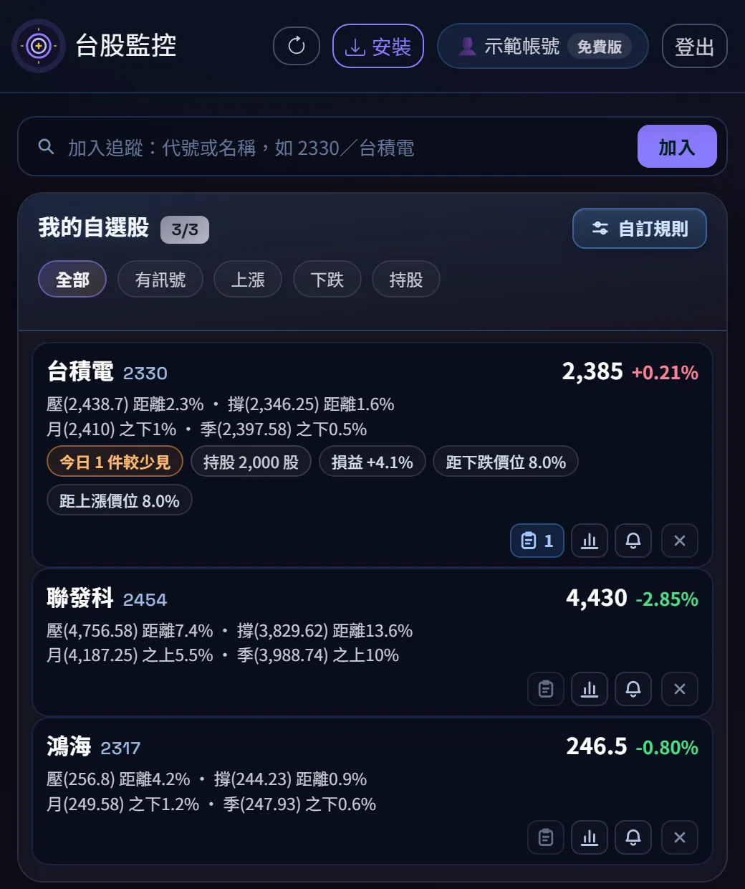
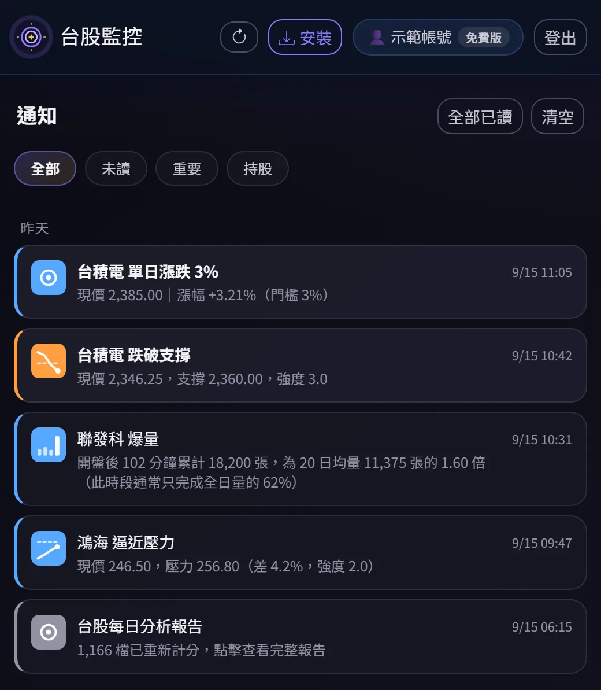
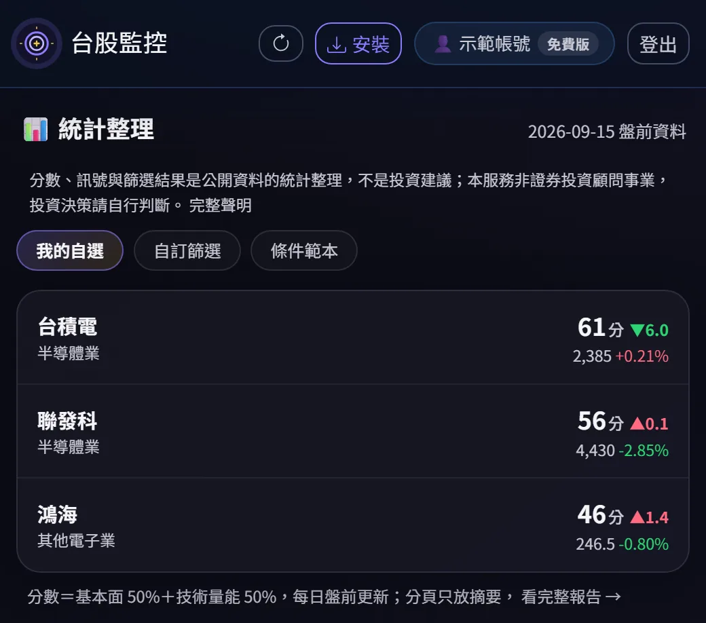

不用盯盤，你和好友都能一起知道 09:07 發生了什麼。
這是一個自動幫你盯盤的服務，幫你追蹤有興趣的股票，偵測到訊號時通知你的手機，更是一個讓你加好友，和朋友共同觀察和討論股票訊號的平台。
- 有哪些訊號：「股價已下跌到你設定的價位」、「股價站上一年新高」、「股價跳空開高 3%」、「法人連續 3 日買超」等數十種訊號，包括開盤中以及收盤後經過整理的訊號。
- 不懂技術指標：系統會預設開啟基礎訊號通知，不須擔心不會設定，也有詳細的訊號說明，可以逐步熟悉。
- 訊號的追蹤條件：能彈性設定簡單或複雜訊號，可系統預設，可自訂，一個幫助建立個人化投資節奏的智能工具。
- 不知道有哪些值得追蹤的股票：本服務提供每日一千多檔股票的統計報告，是純粹的統計結果，統計公式皆透明可查，不具投資建議，可提供初學者開始學習追蹤變化。
- 想和家人朋友一起看：股市雷達中，可以加入好友，把你已經設定好的股票資訊分享給你 App 裡的好友，會將你們連接在同一個平台上，你可以和朋友直接對話，針對個股交流意見，並且這一檔偵測到重要變化時，會同時發送通知到你們的手機，對方不必會設定，大幅降低討論股票的溝通成本。
它幫你盯什麼、什麼時候通知你、怎麼和好友一起看。
下面是 App 的實際畫面，不是設計稿。用一個只放三檔股票的示範帳號錄的，沒有任何使用者的資料。
09:07 那一分鐘，你可能在上學、上班、顧小孩。
但你不必因為沒時間盯盤，而失去選擇的機會。
以 2026-09-21 聯發科當天的實際畫面為例。開盤六分鐘內系統看到六件事，同時也發送重要通知。09:01 先通知股價走勢向上接近壓力區間，09:07 再通知股價已突破壓力，另外四件不吵你、留在雷達裡等你有空再看。

- 109:01 開盤一分鐘價格離壓力 4,870 只差 0.6%，系統先發「逼近壓力」。這一則是預告：接下來幾分鐘值得看一眼。
- 209:07 站上 4,870「突破關鍵價位」推到手機——是手機自己的推播通知，不是 LINE 訊息。你在開會、在通勤，手機震一下就知道，而不是收盤後才發現。
- 3同一分鐘還有三件漲幅超過 5%、創 52 週新高、RSI 高於 70 一起成立。這三件不推播、只記在雷達裡——哪幾種要吵你，由你自己設定，其餘的等你有空再看。
以上是系統對資料的描述，不是對股票的判斷，也不是買賣建議。範例來自公開的盤中資料與示範帳號，不含任何使用者的自選股。
收到通知時，你不一定需要行動。
但至少，你知道了。
知道，才有機會選擇。
不必一直盯著市場，CapitalGuard 幫你看著。
即使你很久沒有打開看盤 App，重要的變化，仍能第一時間掌握。
不必因為沒時間，而失去選擇的機會。
一支手機，盯住你的自選股。
每日統計評分（非投資建議）
基本面 50%＋技術量能 50%，0–100 分。統計頁列出 13 個子項分數、前期對照與變化原因；排序與篩選條件由你自己設定。
盤中訊號
關鍵價位的逼近、突破與跌破、收復支撐、成交量異常、漲跌停、達到設定價格。門檻依每檔股票的波動自動調整，同一檔同一輪只推一則，走手機推播不經 LINE。
自訂通知規則
在 App 裡叫「進階訊號」，和內建的基礎訊號分開設定。價格、漲跌幅、開盤跳空、量能、RSI 達到設定值、MACD、均線、法人籌碼、營收與 EPS 等 23 種條件，在 App 裡就能編輯；多個條件還能混和成一條（混和訊號），例如「向上跳空 2%＋量能達均量 2 倍」同時成立才通知。進階訊號一共 6 條，都能混和條件。
持股損益與 K 線
在自選股列記錄股數與成本，App 會算出市值與未實現損益；K 線視窗標出支撐壓力關卡與今天發過的訊號。
盤後事件彙整
收盤後整理三大法人買賣超、融資融券變化與複合訊號，每則附 0–100 的顯著度，標題只描述資料。
好友分享
把一檔自選股的訊號設定分享給 App 裡的好友，對方接受後，這檔每一則通知你們同時收到，他那一則註明「來自 ○○ 的分享」。你改了設定，對方那邊自動跟著換。所有使用者都能用。
分享股對話框
不論你分享給朋友、或朋友分享給你的每一檔，各自有一個對話框，開在盤中雷達最上面一條。偵測到訊號時就在那一檔裡直接交流討論；有人說話會推播提醒你，內文不寫訊息內容。所有使用者都能用。
AI 資料白話開發中
把分數變化與事件翻成白話說明。不做多空判斷、不預測走勢、不給買賣建議。
想知道每個功能實際怎麼運作？看完整功能說明 →
手機主動推播通知，LINE 只是登入網頁媒介。
不用 LINE 發送通知、不建 LINE 社群、不推標的、不必擔心詐騙。
只做一件事：認出你是誰
加好友的當下帳號就建立完成，LINE 立刻把「開始使用」的連結和 8 碼登入碼傳給你。不用下載、不用設密碼、不用填 Email。換手機時在聊天室傳「登入」就能重拿一組。
把 App 裝到手機桌面
CapitalGuard 是網頁應用程式（PWA），加入主畫面之後就像一般 App 一樣有圖示、全螢幕開啟。不經過 App Store，也不必手動更新。
訊號進手機的通知中心
盤中訊號、盤後事件、每日評分報告，全部由瀏覽器的 Web Push 直接送進手機通知中心，鎖定畫面就看得到。不經 LINE，不另外收費。
所以你的 LINE 聊天室不會被洗版。加好友之後，官方帳號只會傳登入與帳號相關的訊息（例如你自己要的一組新登入碼）。股票的事一律走推播通知，一則都不會出現在 LINE 裡。我們也讀不到你的聊天內容，只取得你的 LINE 顯示名稱與識別碼。
三個畫面，一天就用得到。
下面是 App 的實際畫面，不是設計稿。用一個只放三檔股票的示範帳號截的，沒有任何使用者的資料。



示範帳號的畫面，數字為擷取當下的資料，不是即時行情。
盤前、盤中、盤後，各做一件事。
不是把所有資料塞給你，而是在對的時間，只推該看的。四件事都送進 App 與手機推播，LINE 一則都不會收到。
每日評分報告
日均成交金額 500 萬以上的上市櫃股票重新計算 0–100 分，附 13 個子項分數、前期對照與變化原因。
盤中雷達
盤中持續判斷自選股是否突破或跌破關鍵價位、成交量異常、漲跌停、達到設定價格，成立就推到手機。
盤後事件
三大法人買賣超、融資融券變化與複合訊號整理成事件。一天一則，不重複。
夜間資料更新
財報、籌碼、歷史價量分批更新，隔天開盤前備妥。
不是一個人看著幾檔股票。
下面是系統每個交易日實際在做的事，數字取自 2026-09-15 的運行結果。
- 1,166檔股票每日重新計分日均成交金額 500 萬以上的上市櫃個股
- 2,150檔可搜尋與設定通知全部上市櫃，含不計分的冷門股
- 12個評分子項基本面 5 項＋技術量能 7 項，各有前期對照
- 22種進階訊號條件價量、技術指標、法人籌碼、財報，可組合
- 09:00–13:30盤中全程判斷自選股的關卡、量能與漲跌停，在主機端持續評估
- 15 秒訊號送達手機從判定成立到推播離開伺服器
資料來自證券交易所、櫃買中心與公開資訊觀測站等公開來源，可能延遲、缺漏或有誤。
現在是免費的。
系統上只有一個方案——基礎版，而且不收費。加 LINE 好友建立帳號就是基礎版：10 檔自選股、6 條進階訊號（可以混和條件）、盤中雷達持續更新、每日評分與統計整理分頁、K 線、持股損益、好友分享全部包含，沒有試用期、目前也沒有到期日。
- 10 檔自選股
- 6 條進階訊號，條件可以混和
- 盤中雷達持續更新
- 統計整理分頁、每日評分報告
- 盤中與盤後內建通知不限則數
- 持股損益、K 線
- 好友分享（分享訊號設定給好友、接收好友的分享）
不需要付款資料。加 LINE 好友建立帳號的同時就是基礎版的完整功能，沒有試用期、沒有到期日，也不會有任何扣款；自選股、進階訊號與設定一直都在。
AI 資料白話仍在開發，目前不包含在任何方案裡；完成後會先公告。
三個步驟，大約三分鐘。
加好友之後，LINE 會立刻傳一則訊息給你，裡面有「開始使用」的連結和 8 碼登入碼。LINE 的任務到這裡就結束了——剩下的照你的手機做一次，之後訊號都走推播。
- 加 LINE 好友點上面的按鈕，或在 LINE 搜尋 @408csebn。加好友的當下帳號就建立完成，訊息會立刻送到。
- 點「開始使用」，把 App 裝到桌面連結會用 Chrome 開啟，照畫面提示選「安裝」或「加入主畫面」。
- 從桌面開啟，允許通知Chrome 與 App 共用登入，通常不必再輸入登入碼。允許通知之後，訊號就會送進手機的通知中心。
- 加 LINE 好友點上面的按鈕，或在 LINE 搜尋 @408csebn。加好友的當下帳號就建立完成，訊息會立刻送到。
- 用 Safari 開連結，先「加入主畫面」點下方分享鈕 → 加入主畫面。iPhone 一定要先安裝才收得到推播，需要 iOS 16.4 以上。
- 從主畫面開啟，貼上 8 碼登入碼回 LINE 點「複製登入碼」，在 App 按貼上圖示。Safari 與主畫面 App 的儲存空間不共用，所以這一步不能省。
- 加 LINE 好友用手機掃右邊的 QR，或在 LINE 電腦版搜尋 @408csebn。
- 點訊息裡的「開始使用」瀏覽器會直接登入，不需要輸入任何東西。
- 推播請在手機上安裝電腦版可以看分數、統計與 K 線。盤中訊號要推到身上，還是得在手機加入主畫面。
官方帳號 @408csebn（CapitalGuard-股票追蹤）。加好友後在聊天室傳「登入」，隨時可以重拿一組新的登入碼。
開始之前
加了 LINE 好友，會一直收到 LINE 訊息嗎？
需要下載 App 嗎？
用什麼登入？
通知怎麼送到手機？
為什麼一定要加 LINE 好友？
App 是免費的嗎？
會自動扣款嗎？
可以和朋友一起收同一檔的通知嗎？
這是投資建議嗎？
把盯盤這件事交給推播。
加 LINE 好友就開始，10 檔自選股，免費、沒有期限。LINE 只是登入網頁媒介，通知走手機推播。